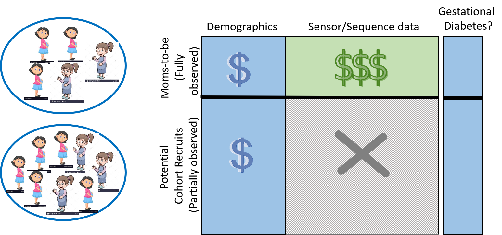

Active Elicitation of Lab Tests
Shuo Yang, Srijita Das, Nandini Ramanan
The high level idea of this project is to actively elicit features for the most useful instances in order to build a sample efficient predictive model. We consider the problem of active feature elicitation in which, given some examples with all the features (say, the full Electronic Health Record), and many examples with some of the features (say, demographics), the goal is to identify the set of examples for whom more information (say, lab tests) needs to be collected. The assumption for this problem setting is that certain features like demographic data is cheap and easily available for most patients. However, expensive or cumbersome features like information about various lab tests are available for less number of patients and we want to elicit expensive features only for the patients who would give us maximum information about the target. We develop a novel unifying framework to solve this problem and demonstrate the efficacy of our approach on 4 real world prediction problems like Alzheimer's disease, Parkinson's disease, Postpartum depression and Rare disease identification. We are also exploring human-in-the-loop approaches within this setting and questions related to different feature acquisition for different subpopulation.
